前面我们聊过唤醒源的Check和Set，可以回顾前文Autosar网络管理：唤醒源的Check和Set。本文我们接着探究一帧有效的网络管理报文是如何把网络唤醒的。
提示：基于Can总线讨论
唤醒事件即可以使用Trcv(Can Transceiver)检查，也可以使用Controller检查,检查方式有中断、轮询两种方式。
假设:采用Trcv(Can Transceiver)中断方式检查唤醒事件，当Trcv接收到一帧报文时，与Controller相连的Rx Pin拉低，触发ICU中断(设置下降沿或者双边沿触发)，之后进入ICU中断处理程序。
提示：如果Trcv没有设置过滤功能，任何一帧报文均可以使能Trcv控制的SBC，进而唤醒ECU，甚至符合Wakeup-Pattern的总线扰动也能唤醒ECU。如果Trcv(硬件)设置了过滤功能，则可以实现特定的网络管理报文唤醒网络。
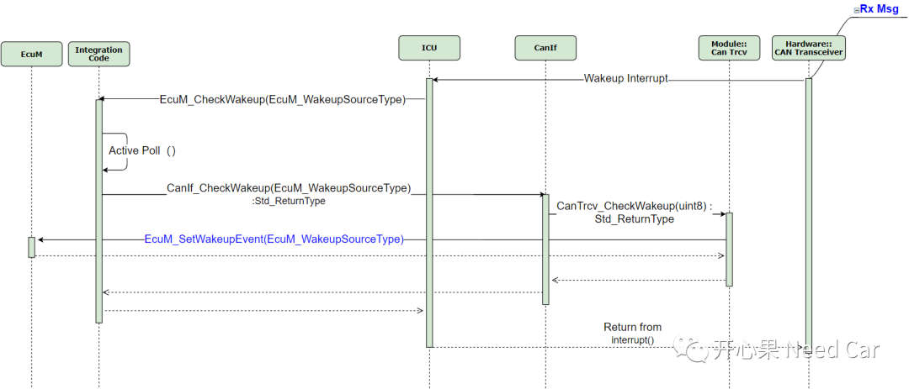
/* #34 Add this source to the global pending wakeups variable. */EcuM_PendingWakeups |= WakeupSource;
为便于细节的展开，我们将Validate分为3个Part:Part1、Part2、Part3，如下所示：
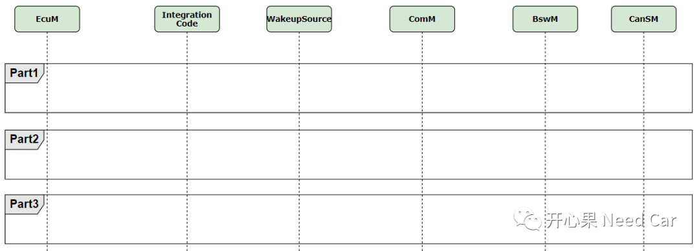
Part1
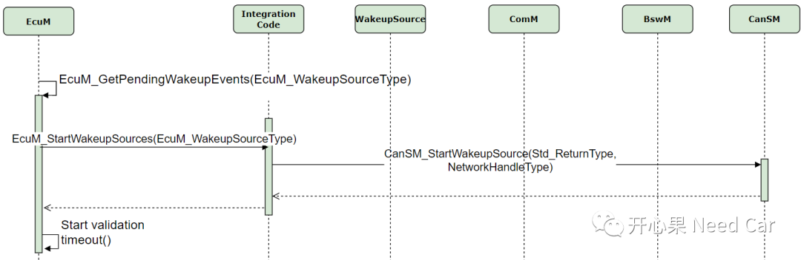
Part2
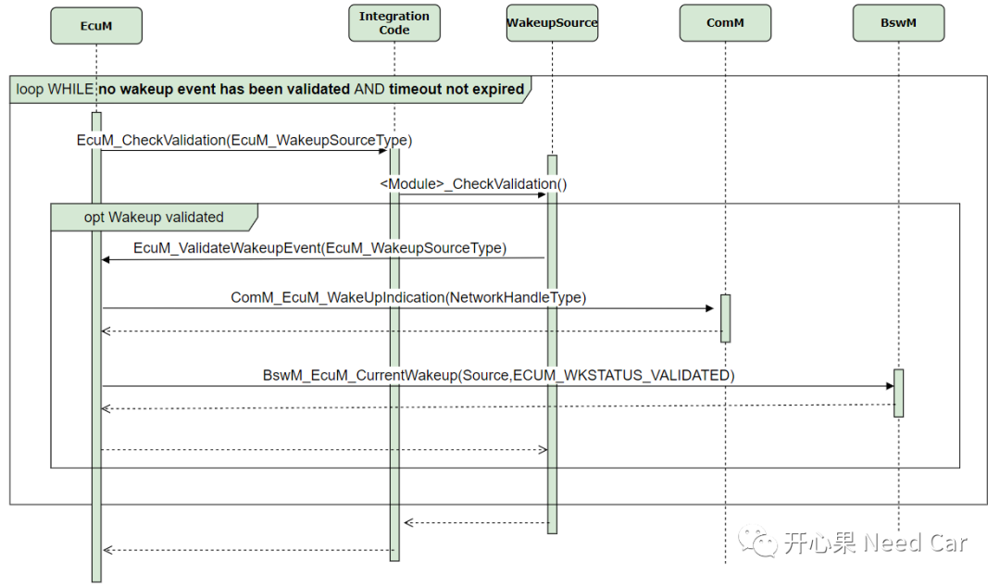
通过ComM_EcuM_WakeUpIndication()告知ComM唤醒事件有效 通过BswM_EcuM_CurrentWakeup()告知BswM唤醒事件有效
Part3
此部分和Part2是一个if..else..关系，此部分表示唤醒事件无效后的处理动作，如果唤醒事件无效，EcuM会将此信息告知BswM，让BswM执行对应的ActionList。
同时，EcuM调用接口EcuM_StopWakeupSources()去切换Trcv和Controller的状态，即关闭两者，之后对应的报文无法接收。
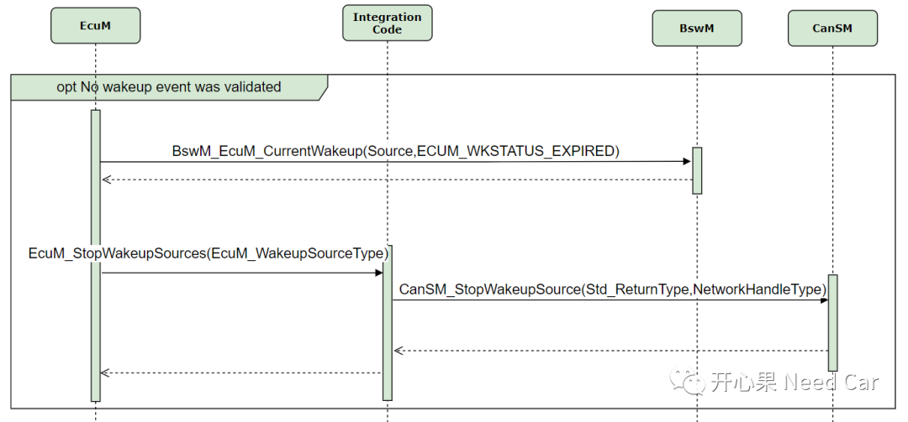
在Part2中，唤醒事件有效以后，会调用ComM_EcuM_WakeUpIndication()接口，之后ComM状态如何切换呢？
ComM对应的通道会切换到COMM_NO_COM_REQUEST_PENDING子状态，如下所示：
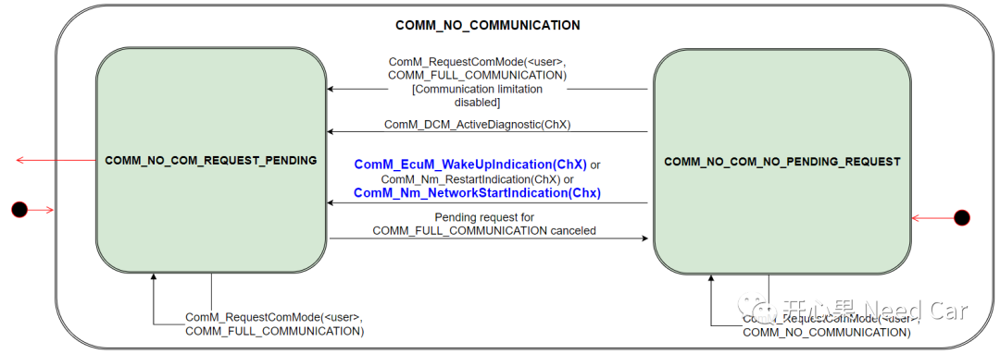
如上可以看出：ComM对应的通道会切换到COMM_NO_COM_REQUEST_PENDING子状态，存在多个or情况，收到网络管理报文也属于其中一种。
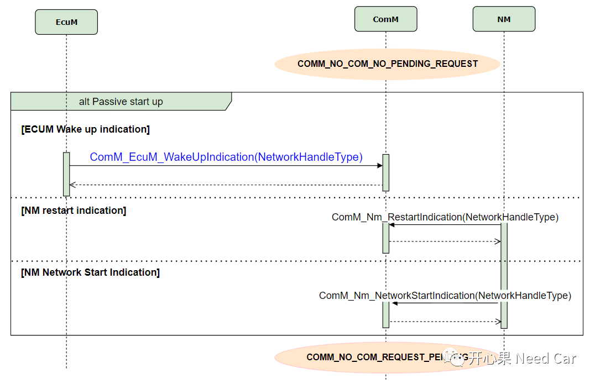
注意：
ComM从COMM_NO_COM_REQUEST_PENDING子状态想要进入COMM_FULL_COM_NETWORK_REQUESTED，需要满足两个条件：
通信允许，即CommunicationAllowed = True
CanSM请求COMM_FULL_COMMUNICATION
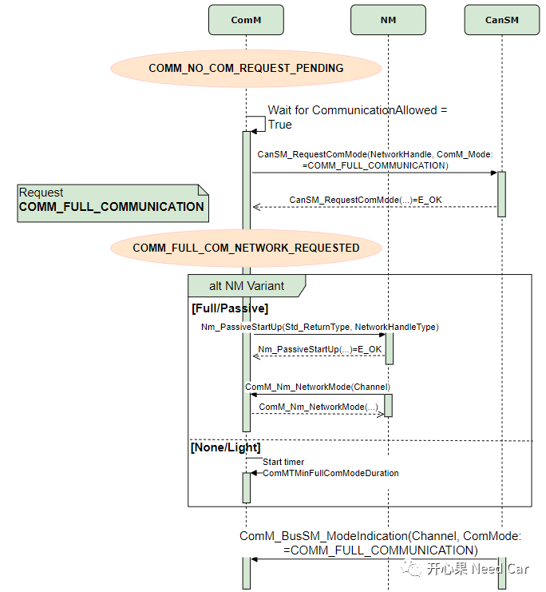
谁控制CommunicationAllowed = True
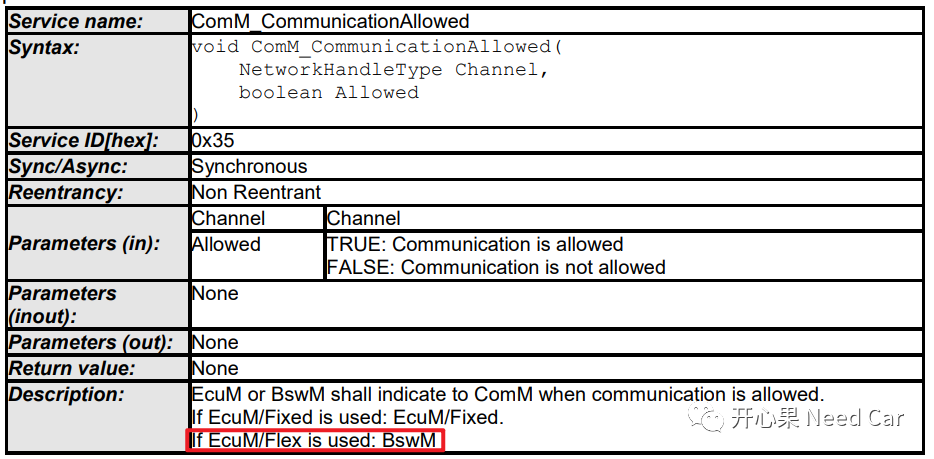
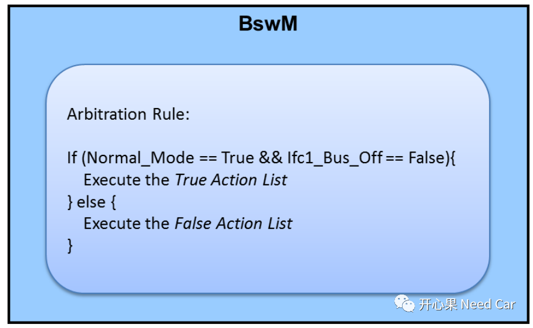
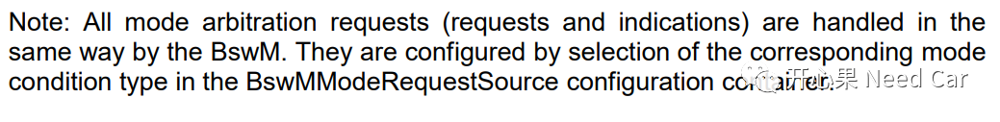
谁请求COMM_FULL_COMMUNICATION
当ComM对应的Channel允许通信以后，且EcuM在RUN Phase时，进入
COMM_FULL_COMMUNICATION状态，谁请求COMM_FULL_COMMUNICATION呢？如果回答了这个问题，就意味着接下来通信COM、网络NM对应的报文可以外发，即：对应节点的网络被一帧网络管理报文唤醒了。
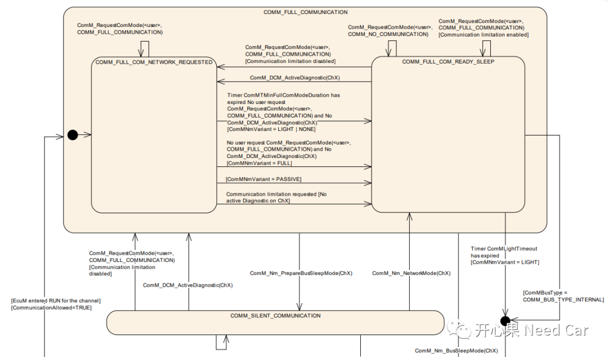
在EcuM调用ComM_EcuM_WakeUpIndication()接口时，EcuM即请求了
打开通信栈，即请求对应的XxSM模块进入FULL_COMMUNICATION状态，Eg:CanSM_StartWakeupSource()。代码示例：
ComM_RequestBusSMMode( Channel, COMM_FULL_COMMUNICATION );切换网络状态，即调用接口Nm_PassiveStartUp(Channel)，网络进入NetworkMode::RepeatMessageState。
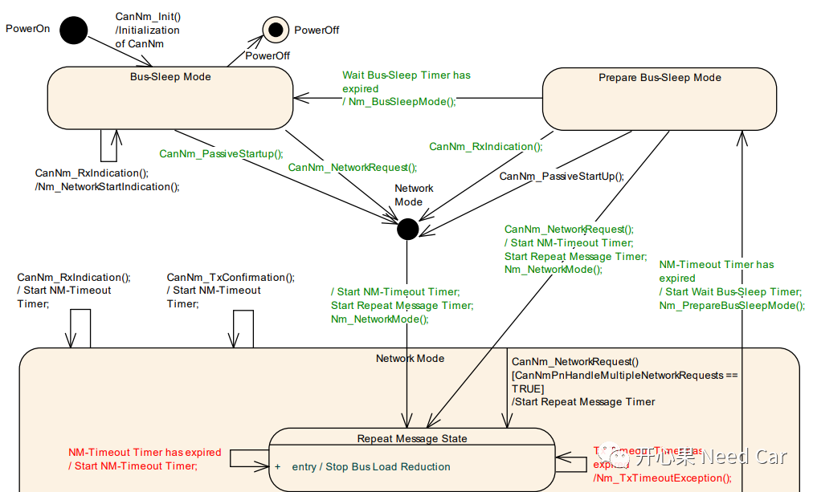

参考资料
AUTOSAR_SWS_COMManager.pdf
AUTOSAR_SWS_ECUStateManager.pdf
AUTOSAR_SWS_BSWModeManager.pdf
AUTOSAR_SWS_CANNetworkManagement.pdf
往期精彩回顾